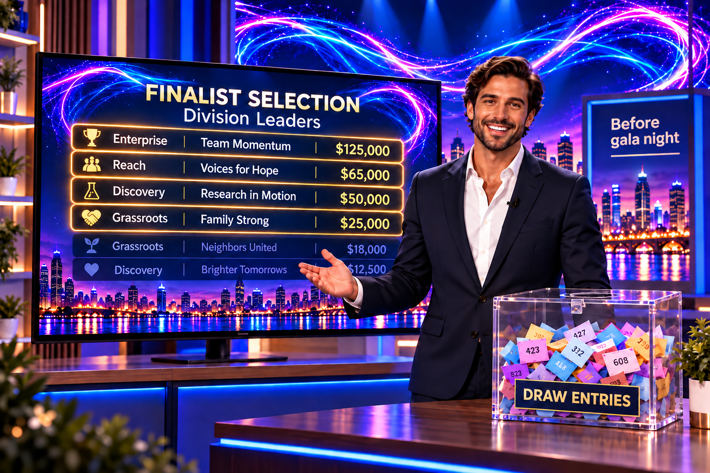
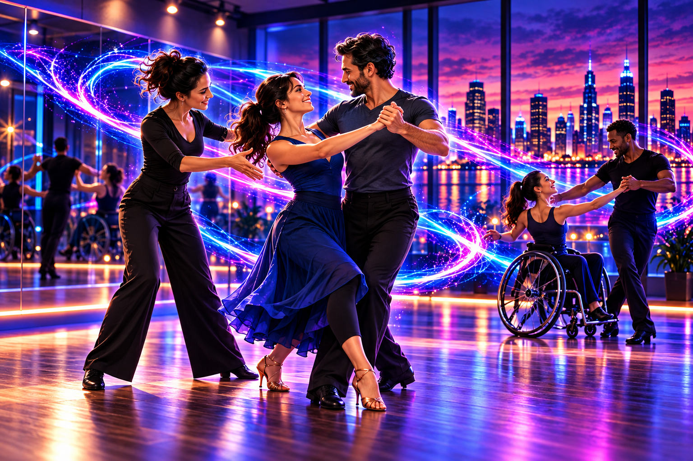
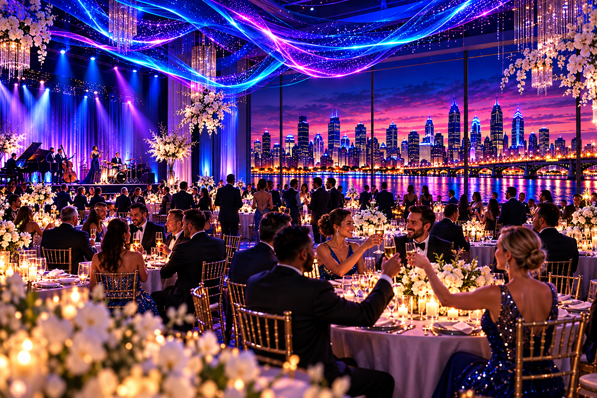
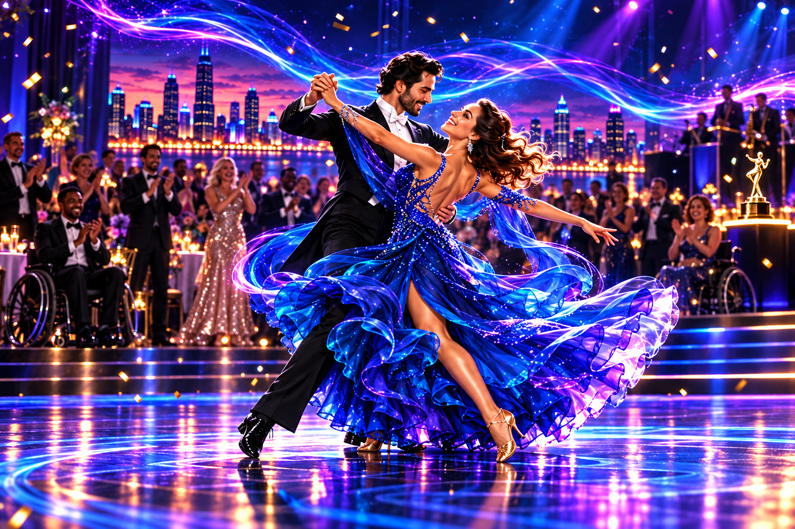
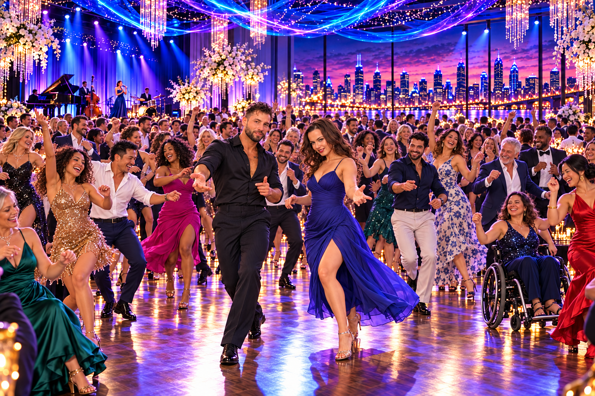

A shared purpose.
A journey to the dance floor.
Dancing to Beat ALS starts long before gala night. Follow the journey from building a team and rallying supporters to preparing finalists, celebrating together, and ending the night on the dance floor.
Pick your beneficiary. Form your team. Rally your people.
Choose your Team Sponsor, introduce your dancing candidate, and select an ALS beneficiary. Set your fundraising goal and invite friends, family, colleagues, and your wider community to get involved.
- Your sponsor determines your division: Enterprise, Discovery, Reach, or Grassroots.
- Choose Team Entry or the Team & Gala Package where available.
- Team-raised gifts are designated to support the team’s chosen ALS beneficiary and are granted under the Foundation’s grant policy. Any fees will be disclosed before launch. Dance Card fees and table upgrades do not count toward fundraising.

How eight teams become finalists.
When fundraising closes, eight teams are chosen to compete on gala night. Under the proposed format, they’re picked three ways:
Proposed format · pending confirmation and legal review
- 4 Division Champions: the top-fundraising team in each division.
- 3 Draw winners: drawn from the remaining teams. Teams earn entries as they reach fundraising milestones, so raising more improves their odds.
- 1 Catalyst’s Choice: picked last by the organizers, using criteria published in advance.
If a finalist can’t take part, an alternate is drawn the same way. The format, milestones and cutoff date are not final.
Explore selection questions →
Turn a little courage into confidence.
Selected finalists move into a preparation phase before gala night. The planned training experience helps dancers develop a routine, build confidence, and prepare to perform.
Training arrangements to be announced
Coaching, rehearsal schedules, partner arrangements, accessibility accommodations, and performance requirements will be confirmed by the organizers. No previous dance experience is required to nominate a candidate.
The intent is a supportive experience that welcomes different abilities and levels of dance experience.

One evening. A community in motion.
Come together for the celebration: supporters, teams, beneficiaries, and finalists sharing an evening centered on the ALS community and the people taking the floor.
- Team & Gala Packages include reserved gala seats; Enterprise includes a table.
- All teams present will hit the dance floor in the Grand Promenade, the showcase group dance (24 teams), or the competition (8 teams).
- A livestream of the gala is planned.
Event date, venue, running order, and showcase format will be announced. No gala seats are reserved by this mockup.
Read about gala seating →Every team has a moment.
A group number brings the floor to life, while featured couples take center stage. The screen tells the story behind the dance: the team, the dancer, the beneficiary, and the funds raised.
We’re planning a livestream so supporters everywhere can share the performances and the energy of the gala.
Dancer: Maya Bennett
Beneficiary: ALS Catalyst Foundation
Amount raised: $27,500
Fictitious team and fundraising amount shown for illustration. Production, choreography, and the final running order will be confirmed.

Celebrate the stories behind every step.
The finalists’ performances bring the journey to its finale. The dance floor becomes a place to celebrate courage, community, and the fundraising impact behind each team.
Competition details to be announced
Judging criteria, scoring, any audience participation, award categories, and the final performance format will be published once confirmed. The website will distinguish fundraising achievements from dance competition results.
Meet the teams making moves →
The night ends with everyone dancing.
Now it’s your turn. A planned group dance lesson gets everyone moving, then the celebration keeps going with a dance party for all guests.
- Learn a few easy steps together, then make them your own.
- Some guests will follow every move. Some will find their own rhythm. Everyone can enjoy the moment.
- From cocktail dresses to shirtsleeves, the floor fills with gala guests smiling, laughing, and dancing together.
No dance experience required. The final music, lesson format, accessibility arrangements, and timing will be confirmed. Image is an illustrative event visualization.
Be part of the celebration →